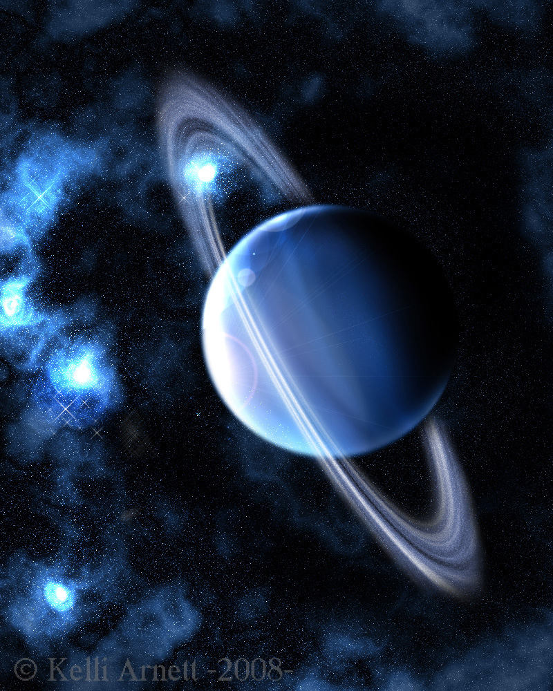
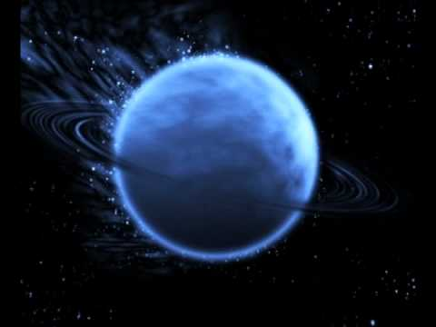
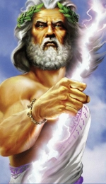

Uranus

- Uranus se roteste in jurul axei in 16 ore si 48 min.
- Se invarte in jurul Soarelui in 84 ani.
- Temperatura: -210 ° C. Diametrul: 50,800 km
- Gravitatia: 0.93x. Compozitia atmosferei: hidrogen, heliu, amoniac si metan.
- Are 27 luni, si cateva inele subtiri. Uranus este inclinat pe o parte.
- A fost vizitat de Voyager 2 în 1986.

Uranus este a saptea planeta de la Soare si a treia ca marime (dupa diametru). Uranus este mai mare ca diametru însa mai mica sub aspectul masei decât Neptun. Plasat pe o orbita de 19 ori mai îndepartata de Soare decât cea a Pamântului, Uranus, ca si Neptun, primeste foarte putina caldura. Cu un diametru de 52.000 km, Uranus este de 2 ori mai mic decât Saturn, dar de 5 ori mai mare decât Terra (Pamântul). Este înconjurat de inele întunecate si are 27 sateliti.
Uranus este zeitatea greaca ancestrala a Raiurilor, un zeu suprem timpuriu. Uranus a fost fiul si partenerul Gaiei tatal lui Cronos (Saturn) si al ciclopilor si titanilor (predecesorii zeilor olimpici).